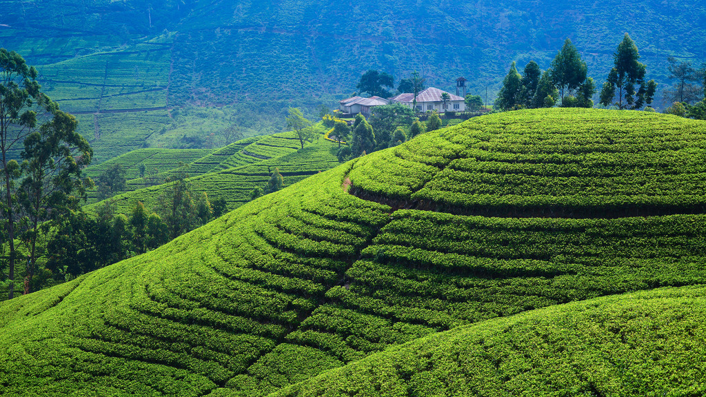

Sri Lankan tea known for generations as “Ceylon Tea” is reputed for its’ taste and aroma world over. Sri Lanka is the largest producer of orthodox tea in the world. Currently, Sri Lanka ranks as the fourth largest tea producer of the world. In the global export front, the country holds the position of third largest exporter of tea. Sri Lanka applies ISO 3720 as the minimum standards for tea. Sri Lankan tea growers and manufactures adopt Good Agricultural Practices (GAP) and Good Manufacturing Practices (GMP) and produce tea under the highest social and environmental standards.
It was as far back as the year 1824 in which the British brought a tea plant from China to
Ceylon (as Sri Lanka was known at the time). It was planted in the Royal Botanical Gardens,
Peradeniya and is considered to have been the first non-commercial tea plant in Sri Lanka.
After nearly two decades in 1867, James Taylor, Scottish by origin, planted 19 acres of tea
in the city of Kandy in Ceylon, at the Loolecondra Estate as the first commercial tea plantation.
The eventual sale of Loolecondra teas resulted in 1872, in Kandy and the first tea consignment to
London in 1873. These pioneering efforts were done by trial and error and improved over the years via
the introduction and improvement of tea processing machines and methods, by different individuals and companies.
The first broking firm John Brothers & Co. was established in 1876 and the first public Colombo auction took place
in 1883 under the guidance of the Ceylon Chamber of Commerce (which was established in 1839). The Colombo Tea Traders'
Association was formed in 1894 and in 1925 the Tea Research Institute was established. These organizations helped boost
the production and export of Ceylon Teas in its early stages.
There are three main tea growing regions in Sri Lanka. These are, Low grown teas which are teas grown on an elevation between sea level to 600m, Mid Grown teas which are from 600m to 1,200m and High grown teas which are grown at an elevation above 1,200m. The taste, flavour and aroma of teas from each elevation are influenced by the conditions particular to those regions. Low grown teas, which are subjected to long periods of sunshine, dry and somewhat warm and moist conditions, exhibit a burgundy brown liquor and a malt, heavy note with black leaf appearance. Whereas High grown teas grown on an elevation of around 3,000 feet would be dramatically different-depending on the time of year, influenced by the chill winds, dry and cool conditions these teas are likely to be extraordinarily light, with greenish, grassy tones in honey golden liquors.
The tea-growing regions of Sri Lanka are clustered mostly among the central mountains of the island and its southern foot hills. Like the great wine-growing regions of France, the tea cultivation of Sri Lanka is divided up into seven defined regions or ‘districts’, each of which is known for producing teas of a particular character. Each presents a unique combination of climate and terrain that leaves its mark on the tea it produces, regardless of price point or estate of origin. Of course, there is considerable variation between sub-districts and individual estates, between successive crops taken from the same estate in successive years and even between different hillsides on the same estate; yet despite such differences, the regional character of the tea is always evident to the experienced taster or connoisseur.
In addition, Sri Lanka’s tea-growing areas are also divided into seven main regions based mainly on the terroir, namely
Each area produces a uniquely flavoured Ceylon Tea, mainly due to the contrasting elevation, climate, and terrain in each region.
In over one hundred and fifty years, the name Ceylon had become
synonymous with the world's finest tea.
In the world's eye and tongue, Ceylon was tea and tea was Ceylon.